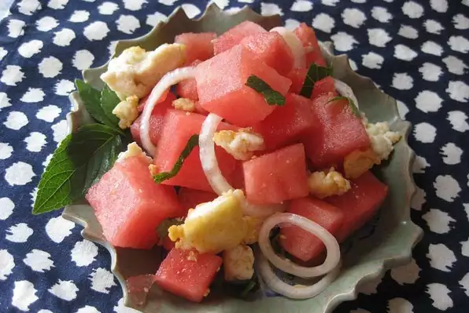

Home Page
Watermelon & Mint Salad

Halloumi cheese and fresh, juicy watermelon are a fantastic salty-sweet pair. In Cyprus, fresh halloumi slices are served with watermelon for breakfast or dessert, but I think frying the halloumi and adding mint increases the flavor and makes a delightful summer salad.
Ingredients
- ½ (8.8 ounce) package halloumi cheese
- 1 teaspoon olive oil
- 3 cups cubed seeded watermelon
- 12 leaves fresh mint, sliced, or more to taste
- 1 small onion, thinly sliced
Steps
- Break halloumi cheese into small pieces. Heat olive oil in a skillet over medium heat. Add halloumi and cook and stir until golden, about 3 minutes.
- Toss watermelon cubes, mint leaves, onion slices, and fried halloumi in a salad bowl.